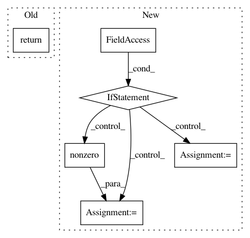

b197fb0946afe59b45a8c7a20a567ebfe253108f,neurodsp/utils/utils.py,,normalize_variance,#,27
Before Change
Variance normalized data.
return array / array.std() * np.sqrt(variance)
def remove_nans(sig):
Drop any NaNs on the edges of a 1d array.
After Change
else:
if select_nonzero:
nonzero = np.nonzero(array)
array_std = np.std(array[nonzero])
out = array.copy()
out[nonzero] = array[nonzero] / array_std * np.sqrt(variance)
else:
out = array / array.std() * np.sqrt(variance)
return out
def remove_nans(sig):
In pattern: SUPERPATTERN
Frequency: 3
Non-data size: 6
Instances
Project Name: neurodsp-tools/neurodsp
Commit Name: b197fb0946afe59b45a8c7a20a567ebfe253108f
Time: 2019-04-08
Author: tdonoghue@ucsd.edu
File Name: neurodsp/utils/utils.py
Class Name:
Method Name: normalize_variance
Project Name: neurodsp-tools/neurodsp
Commit Name: d71b12a9c909ff475d00b2840a40818a51dfc870
Time: 2019-03-21
Author: tdonoghue@ucsd.edu
File Name: neurodsp/sim/utils.py
Class Name:
Method Name: normalize_variance
Project Name: neurodsp-tools/neurodsp
Commit Name: b197fb0946afe59b45a8c7a20a567ebfe253108f
Time: 2019-04-08
Author: tdonoghue@ucsd.edu
File Name: neurodsp/utils/utils.py
Class Name:
Method Name: demean